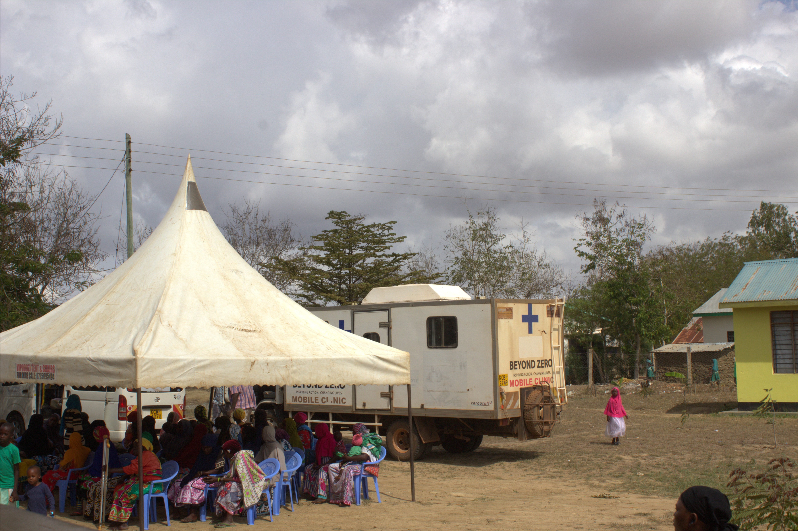
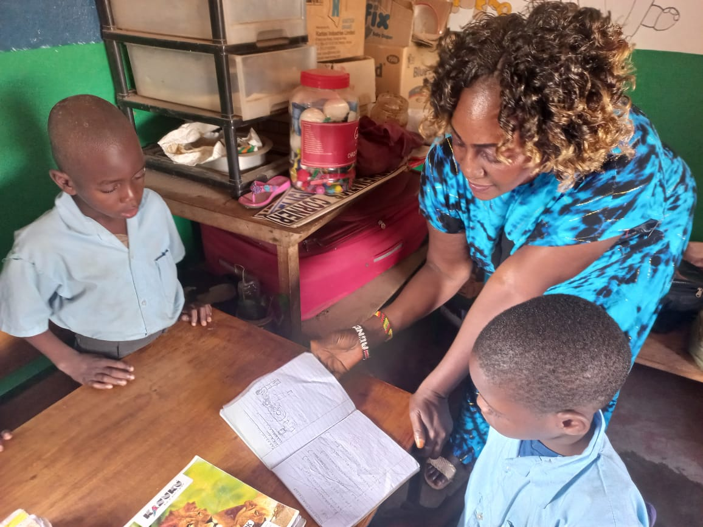

Freundeskreis DZARINO e.V.
Über uns
Wir unterstützen die kenianische Hilfsorganisation DZARINO CBO in Mtwapa bei Mombasa, Kenia, bei der Durchführung ihrer eigenen Projekte. Dazu sammelt der Freundeskreis Spenden, die ohne Abzug und direkt für ausgewählte Projekte zur Verfügung gestellt werden.
Das Wort DZARINO bedeutet "Was ist mit unseren Ideen?!" in Mijikenda, einem Bantu-Dialekt an der Ostküste Kenias. Dieser Name verdeutlicht, dass die Basisgemeinden zwar viele Ideen dafür haben, wie sie ihr Leben nachhaltig verbessern könnten, aber nicht wissen, wie sie diese umsetzen können. Grundsätzlich wirken die kommunalen Gruppen bei Planung und Durchführung der von DZARINO CBO organisierten Projekten maßgeblich mit.
DZARINO CBO (Community Based Organisation) ist eine gemeinnützige Organisation. Die Organisation wurde von kenianischen Kommunalentwicklungsexperten gegründet. Das Ziel ist, die wirtschaftliche und soziale Situation der ländlichen Bevölkerung nachhaltig zu verbessern, insbesondere für Frauen und Kinder.
- DZARINO CBO führt Einkommen schaffende Maßnahmen durch, z.B. Kurse zur Verbesserung landwirtschaftlicher Erträge, Nähkurse, Kurse zur Seifenherstellung, Holzkohle etc.
- DZARINO CBO fördert Betriebsgründungen durch einen Mikrofinanzierungsfond, der ein Kleinkreditsystem für ihre Mitglieder bedient (Table Banking).
- DZARINO CBO fördert Vorschulen und Kindergärten. Die Schulspeisung der bedürftigen Kinder ist ein zentrales Anliegen des Vereins.
- DZARINO CBO fördert Kinder in schwierigsten Familienverhältnissen durch Finanzierung deren Schulbesuch und Stärkung der Familien.
- DZARINO CBO holt Kinder von der Straße und vermittelt sie an Pflegefamilien oder Waisenhäuser.
- DZARINO CBO fördert die medizinische Versorgung in den unterentwickelten ländlichen Gemeinden durch die Organisation und Durchführung von medizinischen Camps.
Projekte
Die Medical Camps
Vor seiner Vereinsgründung förderte der Freundeskreis zum ersten Mal im Oktober 2015 ein Medical Camp (MC) in der Gemeinde Rare im Distrikt Kilifi in der trockenen Savannenregion. 2018 unterstützte der Freundeskreis ein MC in Rare und 2019 und 2022 im Distrikt Kwale.
Der Zugang zu medizinischen Einrichtungen ist nur unter sehr erschwerten Bedingungen möglich, oft gar nicht. Das hat zur Folge, dass viele Menschen mit Krankheiten leben, ohne dies zu wissen. Hier setzen die MCs mit Aufklärung, Untersuchungen und Vermittlung zu den entsprechenden medizinischen Einrichtungen an.
Es werden folgende Dienste angeboten: allgemeine, kinderärztliche und gynäkologische Untersuchungen, Aufklärung zur Familienplanung und Kinderernährung, HIV-Tests und eine Grundversorgung mit Medikamenten.
Medizinisches Personal und eine mobile Klinik mit Röntgeneinrichtung werden von der Gesundheitsbehörde zur Verfügung gestellt. Die Durchführungskosten wie Zeltmiete, Transportkosten, Medikamente etc. werden von DZARINO CBO übernommen. Es werden bis zu 300 Personen pro Tag behandelt.
Die Medical Camps geben der Bevölkerung außerdem viel Ermutigung und moralische Unterstützung und fördern den sozialen Zusammenhalt in den Kommunen. DZARINO CBO arbeitet mit zunehmendem Erfolg daran, die Gesundheitsbehörden an der Finanzierung der Gesundheitsversorgung zu beteiligen.
Die TUMAINI Vorschule
Viele Eltern können ihren Kinder keinen Schulbesuch ermöglichen, weil sie unsichere Kurzzeitjobs haben, vom Alkohol abhängig sind oder sie ihre Kinder auf der Suche nach besserem Weideland zurücklassen. Vielen Eltern ist die Bedeutung der schulischen Bildung nicht bewusst. Kinder und Jugendlichen ohne Schulbesuch sind anfällig für frühe Schwangerschaften, HIV/AIDS und Drogen.
Um dem entgegenzuwirken gründete DZARINO CBO 2015 die TUMAINI Vorschule in einem sozialen Brennpunkt der Stadt Mtwapa. Die meisten Schüler sind Waisen, versorgt von Verwandten oder der Gemeinde.
Bisher finanzierten wir die Renovierung und die Einrichtung des Schulgebäudes sowie die Schulspeisung. Wir haben weitere Mittel für Lehrerqualifizierung und Beschaffung von Lehr- und Lernmitteln bereitstellt.
Leider musste die TUMAINI Vorschule aufgrund von Auflagen der Schulbehörde geschlossen werden. Um die Kinder weiterhin in ihrem schulischen Werdegang zu unterstützen, entwickelte DZARINO CBO das Elimu Kwa Wote program, d.h. den Kindern wird der Besuch staatlicher Schulen ermöglicht.
Elimu Kwa Wote Program
Der swahelische Name bedeutet „Hoffnung und Bildung für alle“. Dieses Programm wurde im Januar 2023 neu eingeführt, als DZARINO CBO sich entschlossen hat, aufgrund von Auflagen der kenianischen Schulbehörde die Schule zu schließen. Die beiden ausgebildeten Lehrerinnen haben inzwischen alle 40 Kinder in die umliegenden Schulen so verteilt, wie es ihrem Lernstand entspricht. Sie bereiten die Schüler für die Aufnahmeprüfungen vor, kontrollieren den Lernstand und geben Hausaufgaben- bzw. Nachhilfe. DZARINO CBO hat die Schulgebühren bezahlt, die Schuluniformen und Schuhe sowie alle Lernmaterialien.
Die angestellten Lehrerinnen, die weiter von DZARINO bezahlt werden, sind nun das Bindeglied zwischen Schule und Elternhaus – Schulbegleiter und Familienhelfer zugleich. Sie überwachen das Lernen und unterstützen die Schüler darin. Sie überprüfen auch, ob die Kinder genügend zu essen bekommen und sorgen dafür, dass sie keiner Gewalt ausgesetzt sind. Gleichzeitig werden die Eltern angeleitet, die wirtschaftliche Situation ihrer Familien zu verbessern. Dazu ist eine Table Banking Gruppe eingerichtet. Außerdem erhalten die Mütter Kurse in Erziehung und ausgewogener Nahrungszubereitung.Die wenigen Kinder, die nicht in andere Schulen gehen können, werden von den Lehrerinnen zuhause mit Aufgaben versorgt, deren erfolgreiche Erledigung regelmäßig überprüft wird.
Es war eine große Herausforderung für DZARINO, diese Situation so zu lösen, dass die Bildung der Kinder nicht unterbrochen wird. Es zeugt von Ideenreichtum und Flexibilität der Organisatoren, dass dies so gut gelungen ist.
Die Initialkosten des Programms in Höhe von 2630 Euro (Schulgeld, Lehrmittel, Schuluniformen und Schuhe) hat der Freundeskreis zur Hälfte übernommen.
Das Jahresbudget des Programms beträgt ca. 6000 Euro. Mit nur ca. 150 Euro kann also ein Kind ein Jahr lang in die Schule gehen, eine warme Mahlzeit am Tag und wirtschaftliche Unterstützung seiner Familie erhalten.
DZARINO CBO sieht Beratung, Schulung, Begleitung und Beobachtung von bedürftigen Familien als eine Kernaufgabe an.
Budget für das Jahr 2024
Währung KSh (Link)
Table Banking
Das Table Banking ist ein System eines geschlossenen Geldkreislaufs, in dem innerhalb einer kleinen, vertrauten Gruppe Spareinlagen gesammelt und Kredite vergeben werden. Solche Gruppen zu bilden und zu stärken, ist eine der Hauptaufgaben von DZARINO CBO. Denn durch die Investitionen, die mit dem Kredit möglich sind, können viele Frauen ein eigenes kleines Geschäft aufbauen und so ihre finanzielle Situation verbessern. Gleichzeitig werden Werte wie Pünktlichkeit, planvolles, zukunftsorientiertes Handeln und Verlässlichkeit vermittelt.
Die Gruppen tagen einmal im Monat. Jede Teilnehmerin bürgt für drei weitere Personen – oft Verwandte -, für die sie Kredite aufnehmen kann. Die Kreditrückzahlung sollte spätestens nach drei Monaten beginnen. Nach spätestens einem Jahr muss der Kredit zurückbezahlt sein. Sonst muss man die Gruppe verlassen. Männer sind selten Teilnehmer, weil sie oft unzuverlässig sind. Das System funktioniert nur, wenn man sich gegenseitig vertrauen kann.
In der ersten Runde, legt jede ihre Ersparnisse auf den Tisch. Es wird genau aufgeschrieben, wer wieviel Geld gespart hat. In der zweiten Sparrunde wird Geld für Minikredite gesammelt, die in Notlagen vergeben werden, wenn z.B. jemand kein Geld für Lebensmittel hat.
Dann folgt die Runde der Kreditrückzahlungen. Wenn eine Frau keinen Beitrag zur Kreditrückzahlung leisten kann, muss sie erklären, warum. Daraufhin überlegen alle Teilnehmer der Runde gemeinsam, wie sie es das nächste Mal schaffen könnte.
Aus der Summe der Ersparnisse und der Kreditrückzahlungen werden in der dritten Runde die neuen Kredite vergeben. Reihum wird gefragt, wieviel Kredit benötigt wird.
10 % des Kredits wird als Zinsen direkt einbehalten und ebenfalls auf den Tisch gelegt. Der Zinsertrag wird so lange gespart, bis eine Anschaffung geleistet werden kann, von der die ganze Gruppe profitiert. Das kann z.B. ein Motoradtaxi sein, das reihum jeweils einen Monat lang an die Gruppenmitglieder vergeben wird, die so als „Taxiunternehmerin“ Geld einnehmen können.
Die Inflationsrate ist in Kenia mittlerweile (Mitte 2023) mehr als 10 %. Das Table Banking sichert in dieser Situation die Existenz.
Aktuelle Berichte
Die Vorsitzende Dr. Marianne Schammert hat einen 1-stündigen Bildervortrag über Kenia (Geografie, Geschichte, Entwicklung aus der Kolonie zur Selbständigkeit, aktuelle wirtschaftliche und soziale Situation) und das Projekt DZARINO CBO ausgearbeitet, den sie seit dem letzten Jahr schon mehrfach an verschiedenen Stellen gehalten hat, zuletzt am 25. April 2024 bei den "Jungen Alten" in Durlach. Der Vortrag war immer erfolgreich, sowohl vom Feedback des Publikums als auch durch die Spenden, die damit für DZARINO gesammelt werden konnten.
Wenn Sie der Vortrag interessiert, nehmen Sie bitte Kontakt mit der Vorsitzenden Dr. Marianne Schammert auf. Sie ist auch gerne bereit, dafür im weiteren Umkreis zu reisen.
Ziel ist es, dieses Jahr ca. 10 000 Euro für das dringend benötigte geländegängige Fahrzeug zu sammeln, damit die Trainerinnen die Frauen und Familien in Dörfern erreichen können.
Spenden
Der Freundeskreis DZARINO e.V. ist ein gemeinnütziger Förderverein. Wir sammeln und bündeln Ihre Spenden und leiten diese ohne irgendwelche Abzüge weiter an unseren kenianischen Partner zur Unterstützung von gemeinsam ausgewählten Projekten.
Wir haben volles Vertrauen in die Zielsetzung und Fähigkeit unseres Partners, gewachsen durch langjährige Zusammenarbeit und persönliche Begegnungen vor Ort. Wir wissen, dass DZARINO CBO grundlegende und nachhaltige Hilfe zur Selbsthilfe leistet.
Dafür werden Ihre Spenden gebraucht. Damit helfen Sie, die wirtschaftliche und soziale Situation der ländlichen Bevölkerung in einer trockenen Savannenregion zu verbessern.
Unser Konto lautet:
Freundeskreis DZARINO e.V.
Volksbank Kraichgau
DE47 6729 2200 0031 8868 05
BIC: GENODE61BTT
Verwendungszweck: SPENDE DZARINO
Sie können Ihre Spende steuerlich absetzen. Eine Spendenbescheinigung stellen wir Ihnen gerne aus. Geben Sie bitte im Verwendungszweck Ihren Namen und Adresse zusätzlich an.
Mitgliedschaft
Unsere geringen Ausgaben für Verwaltung und Öffentlichkeitsarbeit werden aus Mitgliedsbeiträgen bezahlt. Die dazugehörige Arbeit wird von den Mitgliedern unentgeltlich und ehrenamtlich geleistet. Übersteigt die Höhe der Mitgliedsbeitrage die notwendigen Ausgaben, so wird der Differenzbetrag satzungsgemäß den Spenden zugeschlagen.
Werden Sie Mitglied! Der Mindestjahresbeitrag beträgt 35,00 € im Jahr. Sie können aber freiwillig den Betrag erhöhen. Einige Mitglieder begleichen ihren selbstbestimmten Jahresbeitrag monatlich aufgeteilt per Dauerauftrag.
Hier können Sie sich ein Antragsformular herunterladen (Link).
Dokumente
Kontakt
Freundeskreis DZARINO e.V.
1. Vorsitzende Dr. Marianne Schammert
Breslauer Str. 4 76356 Weingarten (Baden)
Tel: 07244/558956 Email: freundeskreis-dzarino@schammert.de
2. Vorsitzende Caroline Biedermann
Ehrenvorsitzender Richard Farun